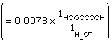

Module 8—Acid-Base Equilibrium
 Self-Check
Self-Check
SC 1. A 0.011 mol/L solution of oxalic acid has a pH of 2.11. Calculate the Ka for oxalic acid using this information.
Self-Check Answers
Contact your teacher if your answers vary significantly from the answers provided here.
SC 1.
HOOCCOOH(aq) + H2O(l)  HOOCCOO–(aq) + H3O+(aq)
HOOCCOO–(aq) + H3O+(aq)
At equilibrium,
Amount Concentration |
[HOOCCOOH(aq)] |
[HOOCCOO–(aq)] |
[H3O+(aq)] |
Initial |
0.011 |
0 |
0 |
Change |
–0.0078  |
+0.0078 |
+0.0078 |
Equilibrium |
0.003 |
0.0078 |
0.0078 |
According to the data, the Ka for oxalic acid is 1.9 × 10–2.
 Read
Read
Approximations: Using Ka to Calculate the [H3O+(aq)] for an Acid
Because of their incomplete ionization, weak acids can make the calculation to estimate [H3O+(aq)] or a solution’s pH more complex than you might expect. A simple check is often done to determine whether an approximation can be used. As you will see described below, an approximation will be used if the extent of ionization for an acid is low relative to its molar concentration.
If this is the case, then the approximation can be used to reduce the complexity of the calculation required. It is important for you to understand that the reason for running the check to determine whether you can use an approximation is to predict the equilibrium concentration for the acid and to determine whether or not the predicted change in the value of the concentration is significant.
The last series of problems you looked at considered relative amounts of material involved in reactions and whether such values were significant. In “Sample problem 16.2” for example, consider the acetic acid used:
This value is higher than 1000, so the approximation is valid. As you saw in the example, subtracting the change in concentration was below the precision of the value for the initial amount concentration and was not significant.
Consider a second example, oxalic acid used in SC 1:
This value is significantly below 1000, so the approximation is not valid. This is consistent with the significant change in the concentration of oxalic acid due to its ionization in aqueous solution.
Are you concerned that applying an approximation will decrease the accuracy of your answer? Since the values for Ka shown on the table are only provided to two significant digits, small changes in concentration will not be accounted for in your calculations.
Remember that you must show that you understand when an approximation can be used. It is incorrect to make an assumption about the importance of the change in equilibrium concentration of the acid without showing work to back up your reasoning. The examples you have been asked to look through in the textbook demonstrate how to communicate that you are testing the assumption and how you intend to use that information to solve the problem.
Self-Check
SC 2. Read the information in “Sample problem 16.3” on page 740 in the textbook. Calculate the factor difference between the concentration of methanoic acid and its Ka. Is the approximation valid for methanoic acid, or is the change in concentration during its ionization significant?
Self-Check Answers
Contact your teacher if your answers vary significantly from the answers provided here.
SC 2.
This value is higher than 1000, so the approximation is valid. As a result, the change in concentration is not significant and the initial concentration of methanoic acid, 0.200 mol/L, can be used in further calculations as required.
Read
Work through “Sample problem 16.3” and “Communication example 3” on pages 740–742 of the textbook.
Self-Check
SC 3. Predict the [H3O+(aq)] and the pH for a 0.125-mol/L solution of hydrosulfuric acid.
SC 4. Complete “Practice” questions 5 and 6 on page 743 of the textbook.

 Try This
Try This
Acid-Base Reactions
It is fun to try out the concepts you are learning, and new concepts always seem to make more sense when you try them hands-on. In this simulation you will learn about percent reaction as you try reacting different acids and bases.
 Go to the website for your textbook. You will need your username and password, available from your teacher, to access the website. Navigate to Unit 8, Chapter 16, Section 16.3, Extensions. Once there, view the simulation “Acid-Base Reactions.” As you work with the simulation, look for patterns as you choose various reactants. Consider the following questions:
Go to the website for your textbook. You will need your username and password, available from your teacher, to access the website. Navigate to Unit 8, Chapter 16, Section 16.3, Extensions. Once there, view the simulation “Acid-Base Reactions.” As you work with the simulation, look for patterns as you choose various reactants. Consider the following questions:
TR 2. Does the Ka help you predict the extent of the reaction between the acid and a base?
TR 3. What does the position on the table indicate about the extent of the reaction?
TR 4. Explain how you could use the simulation to collect information to answer these questions.
Save your answers in your course folder.